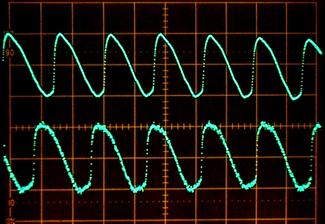

Kay Visi-Pitch / Electroglottograph
A computer that reads what your vocal cords are doing, not what they sound like

Overview
The Kay Visi-Pitch, introduced as a standalone instrument in 1977 by Kay Elemetrics Corporation, evolved by 1987 into a PC-connected voice analysis workstation with an electroglottograph (EGG) module. The EGG measures vocal fold contact area by passing a 2-3 MHz constant-current signal between two gold-plated electrodes held against the neck. As vocal folds open and close, the transverse electrical impedance across the larynx changes, producing a waveform of laryngeal movement — independent of any audible sound. The Model 6300 (1987) connected to IBM PC/XT/AT computers via a custom ISA-bus ADC card running MS-DOS software for real-time display of pitch contours, intensity envelopes, and EGG waveforms. Used clinically for speech therapy, voice research, and singing pedagogy — patients could literally see their own vocal fold behavior on screen and modify it through visual biofeedback. The EGG works during silent phonation, whispering, or subvocalization, making it an early 'silent speech' computer interface. Kay Elemetrics was founded in 1949 by Elvin E. 'Kay' David as an electronic test equipment company, pivoting to speech analysis after introducing the Sona-Graph sound spectrograph in 1961. Acquired by Pentax Medical in 1993 and renamed KayPENTAX.
Deep dive
The electroglottograph principle was invented by Philippe Fabre in France (1957), with independent refinements by Fourcin and Abberton at University College London (late 1960s). Kay Elemetrics entered the field as a commercializer, building its own EGG implementation for integration with the Visi-Pitch voice analyzer. Martin Rothenberg founded Glottal Enterprises in the early 1980s as a competing EGG manufacturer. Kay Elemetrics, already established in speech science through the Sona-Graph (1961), saw the clinical market opportunity: a real-time visual biofeedback tool for voice therapy patients.
Two gold-plated surface electrodes (~2 cm diameter) in a Velcro neckband are placed on either side of the thyroid cartilage at the level of the vocal folds. Electrode jelly ensures conductivity. A constant ~2-3 MHz AC current at under 2 mA passes through the neck tissue. When vocal folds make contact, the transverse electrical impedance across the larynx changes proportionally to vocal fold contact area (VFCA). The amplitude-modulated voltage is demodulated into an Lx (laryngograph) waveform. Critically, this measurement requires NO audible sound — it works during silent phonation, whispered speech, or subvocalization. The signal represents the physical movement of the vocal folds themselves, not the acoustic pressure waves they produce. The Model 6300 digitized both the EGG waveform and a conventional microphone signal through a custom ISA ADC card, displaying them in real time on an IBM PC running MS-DOS. The software showed pitch contour (Hz vs. time), intensity envelope, EGG waveform overlay, and derived parameters like jitter and contact quotient.
The Visi-Pitch Model 6087 shipped in 1977 as a standalone instrument with a built-in green-phosphor CRT, rotary knobs, and BNC connectors — a self-contained voice analysis workstation in a beige metal chassis. The Model 6094 (c. 1988) added EGG input capability to the standalone unit. The Model 6300 (1987) was the first PC-connected version, using a proprietary ISA-bus ADC card and custom Kay Elemetrics MS-DOS software. Later models (6095/6097, 1991-92) expanded PC capabilities. Kay Elemetrics was acquired by Pentax Medical in 1993, becoming KayPENTAX. The Visi-Pitch and EGG product lines continued through the 1990s and 2000s, with modern digital descendants still used in voice clinics today. KayPENTAX was eventually absorbed into Pentax Medical (now under Hoya Corporation), and the KayPENTAX brand was retired. Original Kay Elemetrics Visi-Pitch units appear periodically on eBay at $150-450.
The electroglottograph represents a unique category of HCI: a biosignal interface that measures internal physiological movement (vocal fold contact) rather than user-produced output (speech sound). It predates all modern 'silent speech' and subvocal interface research by decades. As a clinical biofeedback tool, it was one of the first widely deployed real-time visual biofeedback systems — patients could see their voice on screen and adjust it. The 1987 PC-connected Model 6300 represents the pivotal moment when specialized analog lab instruments were retrofitted with computer interfaces via custom ISA cards, bridging the standalone-instrument era and the PC-based scientific workstation era. The technology continues today in modern voice clinics and research labs, providing a clean 'then and now' narrative.
Team & pioneers
- Kay Elemetrics Corporation. Founded 1949 by Elvin E. 'Kay' David in Lincoln Park, NJ. Originally Kay Electric Company, producing electronic test instruments. Pivoted to speech analysis with the Sona-Graph (1961). Developed and commercialized the Visi-Pitch and EGG product lines through the 1970s-1990s.
- Philippe Fabre. French researcher who invented the electroglottograph principle and coined the term in 1957-58. Not affiliated with Kay Elemetrics.
- Fourcin and Abberton. University College London researchers who independently developed the 'laryngograph' in the late 1960s/early 1970s. Founded Laryngograph Ltd. as a competing manufacturer.
- Martin Rothenberg. Founded Glottal Enterprises (Syracuse, NY) in the early 1980s. Developed dual-channel EGG. Key papers on vocal fold contact area (1988, 1992). Competing manufacturer to Kay Elemetrics.
Media

Sources
- Wikipedia: Electroglottograph
- Baken, R.J. (1987). Clinical Measurement of Speech and Voice. College Hill Press — foundational textbook comparing early commercial EGG units including Kay Elemetrics
- Orlikoff, R.F. (1991). 'Assessment of the dynamics of vocal fold contact from the electroglottogram: The Kay Elemetrics Visi-Pitch Model 6094.' Journal of Speech and Hearing Research, 34(4), 689-696
- Rothenberg, M. (1992). 'A Multichannel Electroglottograph.' Journal of Voice, Vol. 6, No. 1, pp. 36-43
- Rothenberg, M. & Mahshie, J.J. (1988). 'Monitoring vocal fold abduction through vocal fold contact area.' Journal of Speech and Hearing Research, 31(3), 338-351
- Fourcin, A.J. & Abberton, E. (1971). 'First applications of a new laryngograph.' Medical and Biological Illustration, 21(3), 172-182 — original laryngograph paper
- Glottal Enterprises — competing EGG manufacturer founded by Martin Rothenberg, with historical product information
- Kay Elemetrics Visi-Pitch Model 6087 listing on WorthPoint (archived eBay listing with product photo)